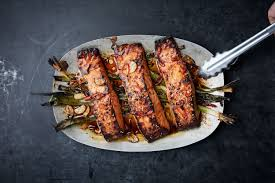

Salmon is an excellent source of several B vitamins, which are needed for energy production, controlling inflammation and protecting heart and brain health.
Ingredients
Two 4-6 ounce salmon fillets
1 clove garlic, peeled and grated with a microplane or other fine-holed grater
Juice and zest of 1 lemon
3-4 sprigs of fresh thyme, leaves removed, plus more whole sprigs, for garnish
Salt and freshly grated black pepper, to taste
Instructions
Pre-heat the broiler on high, placing the top oven rack on the highest notch (about 4–5 inches from the top).
Wash the fillets and pat them dry. Season with the garlic, zest and lemon juice, thyme, salt and pepper. Lay them, skin-side down, on a foil-lined baking sheet or pan. Cook for about 4–5 minutes, but watch the fillets closely because they cook quickly and cooking time can vary depending on the thickness of the fillet. I like my salmon a little pink and tender in the center, but feel free to cook it all the way through.
Serve with wild rice, a simple green salad, or cooked vegetables on the side.
Broiling

Broiling, cooking by exposing food to direct radiant heat, either on a grill over live coals or below a gas burner or electric coil. Broiling differs from roasting and baking in that the food is turned during the process so as to cook one side at a time.
Does broiling make things crispy?
But you don't need to be scared. Use your broiler. Because it's the easiest way to make crispy, beautifully-browned food a reality. ... While your oven normally produces ambient heat that goes all around the food you're cooking, the broiler heats from above—an immediate delivery system for high heat.